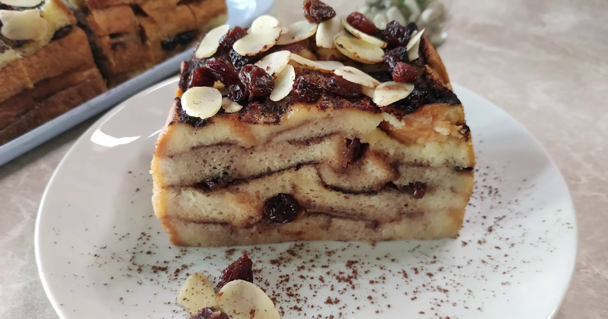

Resep desert Puding Roti Tawar Cokelat

Bahan-Bahan:
- 2 butir kuning telur
- 3 lembar roti tawar
- 4 bungkus minuman sachet bubuk rasa cokelat
- 35 gram gula
- 1 bungkus agar-agar bening
- 750 ml air
- Sedikit garam
Langkah-Langkah:
- Langkah 1 :
- Sobek-sobek roti menjadi bagian-bagian kecil.
- Langkah 2 :
- Masukkan semua bahan ke dalam blender kecuali kuning telur. Haluskan.
- Langkah 3 :
- Letakkan adonan ke panci, nyalakan api sedang.
- Langkah 4 :
- Aduk adonan yang tengah didihkan
- Langkah 5 :
- Siapkan kuning telur yang sudah dikocok. Tuang seidikit adonan cokelat pada kuning telur, aduk rata
- Langkah 6 :
- Tuang adonan telur yang sudah dicampur ke adonan cokelat kemudian aduk rata sampai mendidih.
- Langkah 7 :
- Setelah mendidih, matikan kompor dan tuang adonan ke cetakan. Tunggu hingga adonan tak mengeluarkan uap panas, kemudian masukkan ke kulkas.
- Langkah 8 :
- Setelah puding roti sudah set, keluarkan dan pindahkan ke piring.
- Langkah 9 :
- Taburi puding roti tawar menggunakan bubuk minuman cokelat sachet sebagai hiasan.